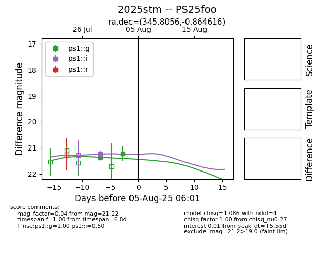

Target 2025stm at 2025-08-06 06:40, see:
TNS: wis-tns.org/object/2025stm
YSE: ziggy.ucolick.org/yse/transient_detail/2025stm
alt names
2025stm (yse,tns)
PS25foo (panstarrs)
coordinates:
equatorial (ra, dec) = (345.8056,-0.86462)
galactic (l, b) = (73.7363,-53.07239)
photometry
last ps1::g=21.22, ps1::i=21.24
2 ps1::g, 1 ps1::i detections
